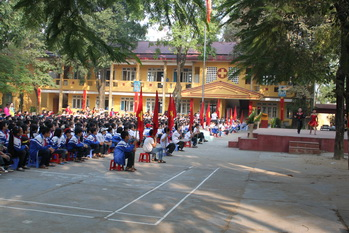

Tiểu học Nha Trang - ngôi trường thân thiện
Một ngôi trường thân thiện, hiệu quả
Đến thăm Trường Tiểu học Nha Trang T.P Thái Nguyên những ngày đầu năm học mới này chúng tôi cảm nhận được ở một ngôi trường có bề dày truyền thống này chính là một không gian mở vô cùng thoáng đãng. Từ bên ngoài nhìn vào có thể thấy được những hàng cây xanh mát, một chiếc ao nằm giữa khuôn viên với những chùm hoa súng tím lấp lánh trong nắng sớm. Các lớp được bố trí khoa học, sân chơi bãi tập rộng rãi, sạch sẽ… khiến chúng ta liên tưởng đến một ngôi trường rất trẻ trung, năng động, đầy sức sống… thành quả trên có được là do tập thể cán bộ, giáo viên, phụ huynh học sinh (HS) nhiều thế hệ vun đắp để mỗi ngày các em đến trường là một ngày vui.

Trò chuyện cùng chúng tôi cô giáo Phạm Thị Bích, Hiệu trưởng Nhà trường tâm sự: muốn các em học hiệu quả thì môi trường giáo dục là vô cùng quan trọng. Không phải đến khi Bộ GD & ĐT phát động phong trào thi đua “Xây dựng trường học thân thiện, học sinh tích cực” thì Trường mới thực hiện những nội dung của phong trào. Mà từ nhiều năm trước, Trường đã có nhiều giải pháp xây dựng một ngôi trường thân thiện, hiệu quả, để bổ trợ tốt cho quá trình giáo dục. Sau nhiều năm nỗ lực phấn đấu, từ nguồn ngân sách và thực hiện công tác xã hội hóa giáo dục, hiện Trường đã có 22 phòng học 2 tầng và 4 phòng học cấp bốn với kích thước rộng từ 30 đến 42m2; 100% bàn ghế đồng nhất một chủng loại. Thăm các lớp học chúng tôi nhận thấy các phòng đều được bố trí từ 4 - 6 bóng tuýp, 2 quạt trần, 4-6 quạt tường, đủ ánh sáng và không khí mát mẻ cho lớp học. Trên tường ảnh Bác và các khẩu hiệu, chủ đề của năm học được treo trang trọng. Các phòng chức năng khác như tin học, thư viện, y tế học đường, truyền thống, đội, thiết bị giáo dục… được trang bị đầy đủ theo quy định của một trường chuẩn Quốc gia mức độ II. Đến thăm thư viện Nhà trường vào giờ giải lao chúng tôi thấy rất đông các em HS đang đọc sách. Được biết, Nhà trường bố trí cho mỗi lớp một tiết đọc sách/tuần tại thư viện. Ngoài ra, trong giờ giải lao hoặc trước mỗi buổi học các em được tự do đọc sách tại thư viện. Cán bộ thư viện phối hợp chặt chẽ với giáo viên chủ nhiệm để hướng dẫn các em đọc và mượn sách. Trường còn phát động phong trào “Tủ sách dùng chung” để tạo ra sự giao lưu về sách báo giữa HS, giúp các em tham khảo được nhiều kinh nghiệm hay trong học tập và các tấm gương tiêu biểu vượt khó học giỏi trên sách, báo.
Song nhắc đến ngôi trường mang tên T.P Nha Trang kết nghĩa với T.P Thái Nguyên này chúng tôi không thể không đề cập đến truyền thống dạy tốt, học tốt của Trường. Với cách làm: thưởng cho giáo viên có sáng kiến kinh nghiệm ứng dụng hiệu quả vào quá trình giảng dạy; tổ chức các buổi tự học của giáo viên trên mạng Intenet vào chiều thứ 6 hàng tuần; giao cho giáo viên xuống 22 tổ dân phố thuộc địa bàn phường mà Trường quản lý về giáo dục để lắng nghe ý kiến phụ huynh, hướng dẫn phụ huynh dạy con em học ở nhà; tổ chức thường xuyên hoạt động dự giờ, thăm lớp, phong trào hội giảng… mà Trường Tiểu học Nha Trang có đội ngũ giáo viên tâm huyết, yêu nghề, giỏi về chuyên môn nghiệp vụ. Trường hiện có 55 cán bộ, giáo viên, trong đó 44 người trực tiếp đứng lớp. Về trình độ chuyên môn, 100% đội ngũ giáo viên đạt chuẩn; 29/44 đồng chí trên chuẩn, bằng 65,9%. Với đội ngũ giáo viên giỏi, tâm huyết, trong những năm gần đây chất lượng giáo dục toàn diện của Trường luôn ổn định ở mức cao so với mặt bằng chung của tỉnh. Tỷ lệ HS đạt học lực khá, giỏi chiếm trên 65%. Năm học 2011-2012, Trường có 937 HS xếp loại học lực giỏi, bằng 88,9%, HS tiên tiến 95 em, bằng 9,1%, học lực trung bình 22 em, bằng 2%, không có trường hợp nào xếp loại yếu kém. Kết quả trong kỳ thi HS giỏi cấp thành phố có 121 em đoạt giải; 48 em đoạt giải HS giỏi cấp tỉnh và 8 em có thành tích cao trong kỳ thi cấp quốc gia. Năm học 2011-2012, Trường được Chủ tịch UBND tỉnh tặng danh hiệu tập thể lao động xuất sắc; được cấp Bằng chứng nhận kiểm định chất lượng giáo dục cấp độ 3 (cấp độ cao nhất).
Nhà trường vinh dự đón nhận bằng công nhận kiểm định chất lượng giáo dục cấp độ 3
(Theo Bùi Xuân Hòa- Báo Thái Nguyên)